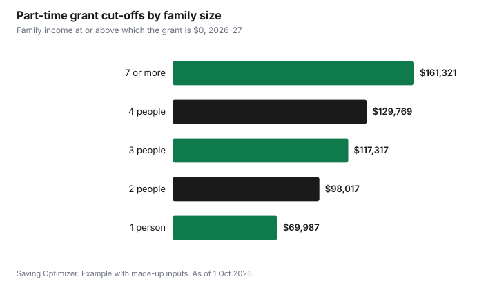

Education · Canada
Canada Student Grant for Part-Time Students 2026-27: Up to $2,520

For the 2026-27 school year, the Canada Student Grant for Part-Time Students pays up to $2,520, but never more than your assessed need. You get the full amount if your previous year's gross family income is at or below $38,474 for a single person; above that it shrinks, and it ends at $69,987. Because part-time need counts only your educational costs, such as tuition and books, a student taking one or two courses often gets less than the maximum simply because the courses cost less. You apply through your province or territory and are assessed for the grant automatically.
Key takeaways
- Up to $2,520 for 1 Aug 2026 to 31 Jul 2027, set by the Canada Gazette amendment SOR/2026-139.
- The grant cannot exceed your assessed need; part-time need is educational costs only.
- Full grant at or below $38,474 family income for one person; none at $69,987 or more.
- You must have completed courses you were funded for before.
- Not available to students from the Northwest Territories, Nunavut or Quebec.
- Example with made-up inputs: a single student earning $50,000 gets about $1,598.
How much you can get
The 2026 amendment to the Canada Student Financial Assistance Regulations, published in the Canada Gazette on 1 July 2026, sets the maximum part-time grant at $2,520 for the 2026-27 academic year. Canada.ca says the grant will not be more than your assessed need; for example, an assessed need of $1,200 gives a $1,200 grant. The school year runs from 1 August to 31 July.
The Gazette explains why part-time amounts are often small: for part-time students, assessed need is based on allowable educational costs only, so living expenses and resources are not counted. Full-time need, by contrast, is allowable costs minus resources. If your tuition, fees and books for the year come to $1,800, your grant cannot exceed $1,800 even if your income qualifies for the full $2,520.
Income thresholds and cut-offs
Canada.ca publishes two income levels for each family size, based on the previous year's gross family income. Below the first, you qualify for the maximum. At or above the second, you get nothing. In between, the grant decreases.
| Family size | Maximum grant at or below | No grant at or above |
|---|---|---|
| 1 | $38,474 | $69,987 |
| 2 | $54,412 | $98,017 |
| 3 | $66,641 | $117,317 |
| 4 | $76,952 | $129,769 |
| 5 | $86,033 | $141,180 |
| 6 | $94,245 | $151,937 |
| 7 or more | $101,797 | $161,321 |
How the grant phases out
The regulations set an annual phase-out rate for each family size. The grant drops by that rate for every dollar of family income above the threshold, which is why it reaches zero exactly at the cut-off. For one person the rate is 0.079968, about 8 cents per dollar; for a family of three it is 0.049728, about 5 cents.
| Family size | Rate | About |
|---|---|---|
| 1 | 0.079968 | 8.0 cents per dollar |
| 2 | 0.057792 | 5.8 cents |
| 3 | 0.049728 | 5.0 cents |
| 4 | 0.047712 | 4.8 cents |
| 5 | 0.045696 | 4.6 cents |
| 6 | 0.043680 | 4.4 cents |
| 7 or more | 0.042336 | 4.2 cents |
Example with made-up inputs: three students
These numbers are an example with made-up inputs; each assumes assessed need of at least $2,520. A single student with family income of $50,000 is $11,526 over the threshold; 11,526 × 0.079968 = $921.71, so the grant is $2,520 − $921.71 = about $1,598. A single student earning $60,000 gets about $799. A family of three with $80,000 is $13,359 over its threshold; at 0.049728 that is $664.32 off, for a grant of about $1,856. If the first student's courses cost only $1,200, the grant would be $1,200.
| Student | Family income | Over threshold | Grant |
|---|---|---|---|
| Single | $50,000 | $11,526 | About $1,598 |
| Single | $60,000 | $21,526 | About $799 |
| Family of 3 | $80,000 | $13,359 | About $1,856 |
| Single, courses cost $1,200 | $50,000 | $11,526 | $1,200 (capped at need) |

Who can get it
Canada.ca says you could be eligible if you apply and are a part-time student in a qualified program at a designated institution, have successfully completed the courses you were given a grant for in the past, and your family income is below the cut-off. The grant is not available to students from the Northwest Territories, Nunavut or Quebec, which have their own student aid programs. What counts as part-time depends on your province and school; StudentAid BC, for example, treats full-time as at least 60% of a full load.
Part-time loans
The Gazette says part-time loans are provided up to the lesser of your assessed need or a maximum outstanding balance of $10,000. Alberta Student Aid confirms the $10,000 part-time limit, excluding interest, and says students who reach it remain eligible for Canada Student Grants. Alberta also says part-time Canada loans are automatically interest-free while you are a part-time student. Take the grant first; borrow only what the grant does not cover.
Provincial top-ups and related grants
| Program | Amount | Source |
|---|---|---|
| Canada Student Grant for Part-Time Students with Dependants | Up to $2,688 for 2026-27 | SOR/2026-139 |
| Canada Student Grant for Students with Disabilities | $2,800 for 2026-27 | SOR/2026-139 |
| B.C. Access Grant, part-time | Up to $1,000 a year; no grant at $55,981 for one person | StudentAid BC |
StudentAid BC notes that its part-time loan program does not cover living costs; it allows for educational costs and child care up to funding maximums. For students with disabilities, see grants for students with disabilities; for parents, see grants for students with dependants.
Part-time or full-time?
If you are close to a full load, compare. Full-time students can get the Canada Student Grant for Full-Time Students of up to $525 for each month of study, and their need counts living costs as well as educational costs, minus resources. Alberta lists the same family income cut-off, $69,987 for one person, for the full-time grant. Over an eight-month year, $525 a month adds up to $4,200, compared with $2,520 for part-time study. The Gazette notes that the federal government covers about 60% of a student's assessed need, with the province or territory providing the rest, so provincial rules also shape the total.
| Status | Maximum grant | What need counts |
|---|---|---|
| Part-time | $2,520 a year | Educational costs only |
| Full-time | $525 per month of study | Allowable costs, including living costs, minus resources |
Steps
- Confirm your program is qualified and your school designated.
- Find your previous year's gross family income and family size.
- Check the threshold table to estimate your grant.
- Add up tuition, fees and books; your grant cannot exceed that need.
- Apply for part-time aid with your province or territory for each school year.
- Finish the funded courses; incomplete courses can block future grants.
For full-time amounts, see Canada Student Grant 2026-27. If you are an older learner, see seniors' tuition waivers.
Sources
- Canada Gazette Part II, SOR/2026-139, Regulations Amending the Canada Student Financial Assistance Regulations, published 1 Jul 2026. 2026-27 maximums, part-time need rule, part-time loan limit, thresholds and phase-out rates.
- Government of Canada, Canada Student Grant for Part-Time Students, canada.ca (Wayback capture 16 Jun 2026), as of 1 Oct 2026. Eligibility, cut-offs effective 1 Aug 2026, need cap and example.
- Alberta Student Aid, Loan Limits policy and keeping loans interest-free, studentaid.alberta.ca, as of 1 Oct 2026.
- StudentAid BC, Part-time funding and B.C. Access Grant (part-time), studentaidbc.ca, as of 1 Oct 2026.
- Incomes and course costs in the example are an example with made-up inputs.
Frequently asked questions
How much is the Canada Student Grant for part-time students in 2026-27?
Up to $2,520 for the school year from 1 August 2026 to 31 July 2027, set by SOR/2026-139. The grant cannot be more than your assessed need.
What income qualifies for the full part-time grant?
Previous year's gross family income at or below $38,474 for one person, $54,412 for two or $66,641 for three. The grant ends at $69,987, $98,017 and $117,317 respectively.
Why did I get less than $2,520?
Either your income is above the threshold, so the grant phases out, or your assessed need is lower. Part-time need counts only educational costs such as tuition and books.
Can Quebec students get the part-time grant?
No. Canada.ca says the grant is not available to students from the Northwest Territories, Nunavut or Quebec, which have their own programs.
How much can part-time students borrow?
Part-time loans go up to the lesser of your assessed need or a maximum outstanding balance of $10,000.
Is there extra help for part-time students with children?
Yes. The Canada Student Grant for Part-Time Students with Dependants pays up to $2,688 for 2026-27.
Researched and drafted with AI assistance and fact-checked against official Canadian sources. How we create content.